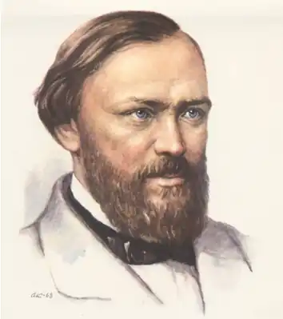
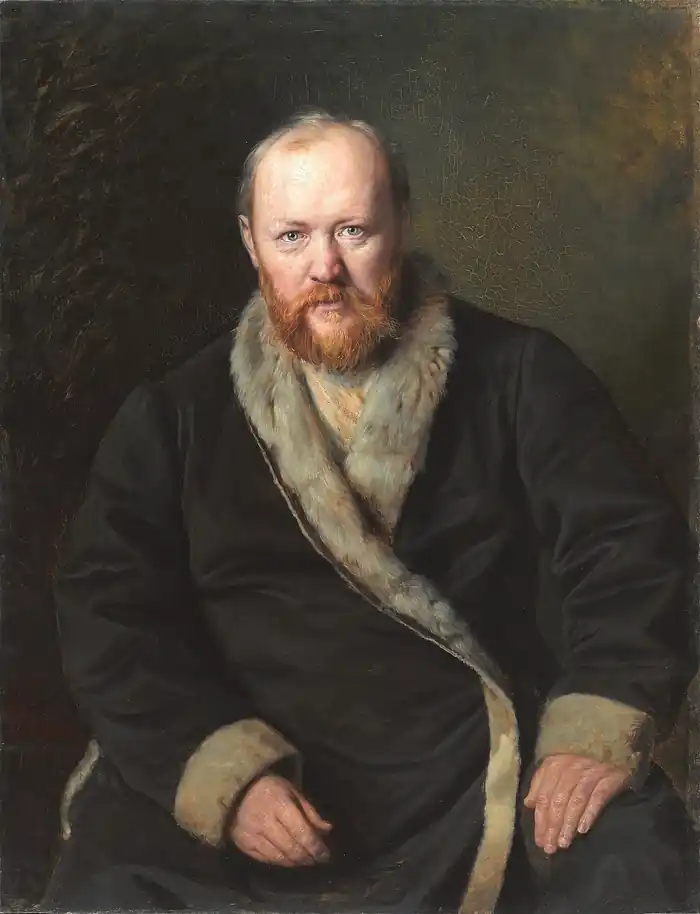
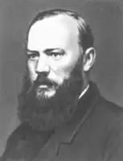

Олександр Миколайович Островський народився 12 квітня (н. с.)1823 року в Москві в родині чиновника, який заслужив дворянство.
В 12 років був відданий в 1-у Московську гімназію, яку закінчив у 1840 році і вступив на юридичний факультет Московського університету (1840 — 1843).
Навесні 1848 року сім'я переїжджає в Щеликово. У 1849 році була написана комедія "Свої люди — поквитаємось!", принесла визнання автору, хоча і з'явилася на сцені тільки через 11 років (була заборонена Миколою I, а Островський був відданий під нагляд поліції). Натхненний успіхом та визнанням, Островський кожен рік писав одну, а іноді кілька п'єс, створивши цілий "театр Островського", що включає 47 п'єс різних жанрів. У 1850 Олександр Миколайович стає співробітником журналу "Московитянин", входить в коло літераторів, акторів, музикантів, художників. Ці роки багато дали драматургу в творчому відношенні. У цей час написані "Ранок молодої людини", "Несподіваний випадок" (1850). У 1851 Островський пішов зі служби, щоб всі сили й час віддати літературної творчості. Продовжуючи гоголівські викривальні традиції, він пише комедії "Бідна наречена" (1851), "Не зійшлися характерами" (1857). 1855 — 60, в передреформний період, зближується з революційними демократами, приходить до своєрідного "синтезу", повернувшись до викриттю "володарів" і протиставляючи їм своїх "маленьких людей". З'являються п'єси: "В чужому бенкеті похмілля" (1855), "Прибуткове місце" (1856), "Вихованка" (1858), "Гроза" (1859). Добролюбов захоплено оцінив драму "Гроза", присвятивши їй статтю "Промінь світла в темному царстві" (1860). В 1860-е Островський звертається до історичної драми, вважаючи подібні п'єси необхідними в репертуарі театру: хроніки "Тушино" (1867), "Дмитро Самозванець і Василь Шуйський", психологічна драма "Василиса Мелентьєва"(1868). У 1870 роки малює життя пореформеного дворянства: "На всякого мудреця досить простоти", "Скажені гроші" (1870), "Ліс" (1871), "Вовки та вівці"(1875). Особливе місце займає п'єса "Снігуронька" (1873), яка висловила ліричний початок драматургії Островського. В останній периодтворчества була написана ціла серія п'єс, присвячених долі жінки в умовах підприємницької Росії 1870 — 80: "Остання жертва", "Безприданниця", "Серце не камінь", "Таланти і шанувальники", "Без вини винні" та ін Помер Островський А. 14 червня 1886 в маєтку Щеликово.